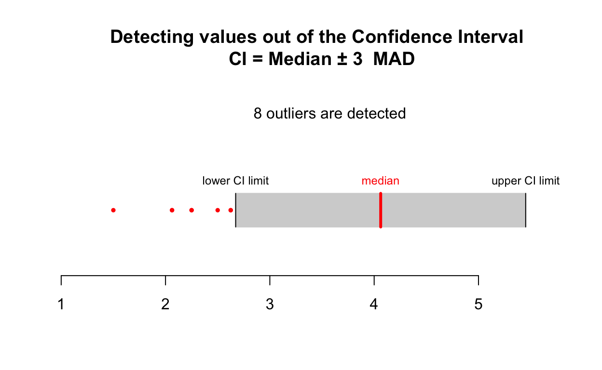
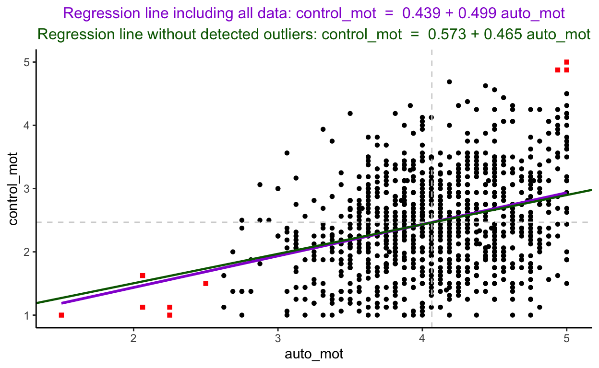
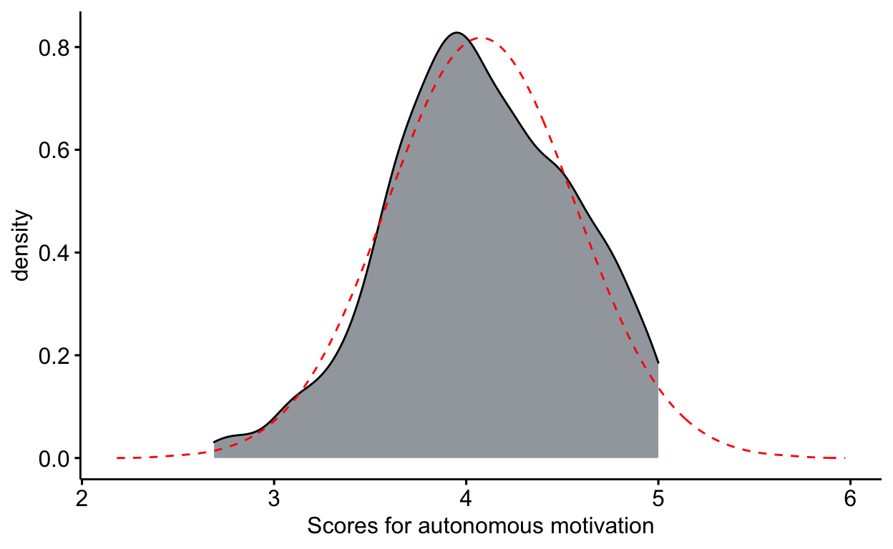
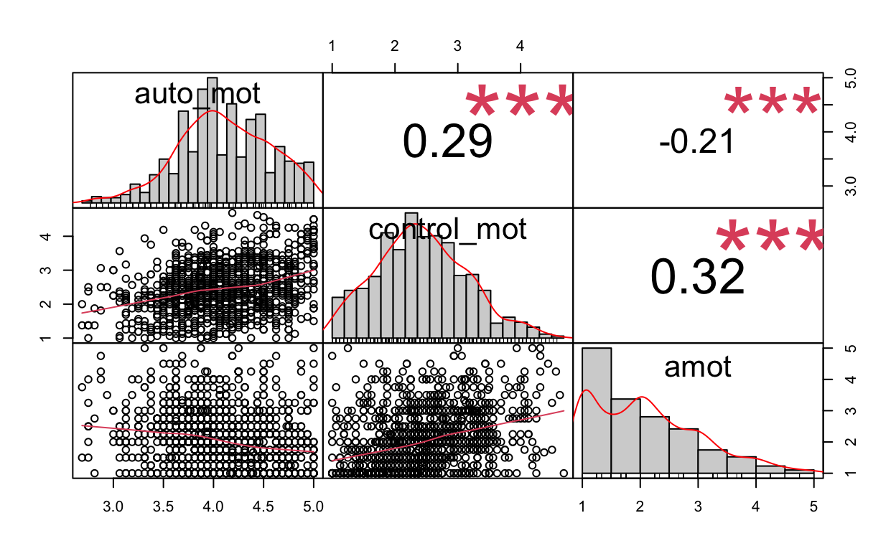
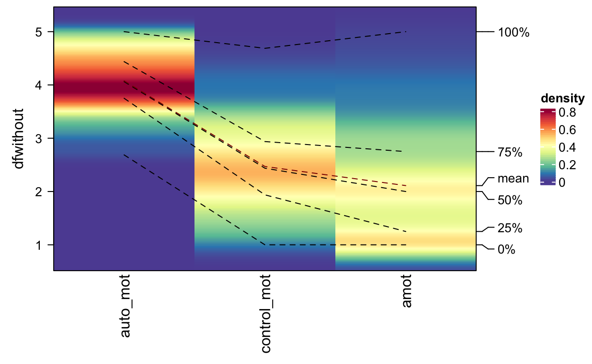
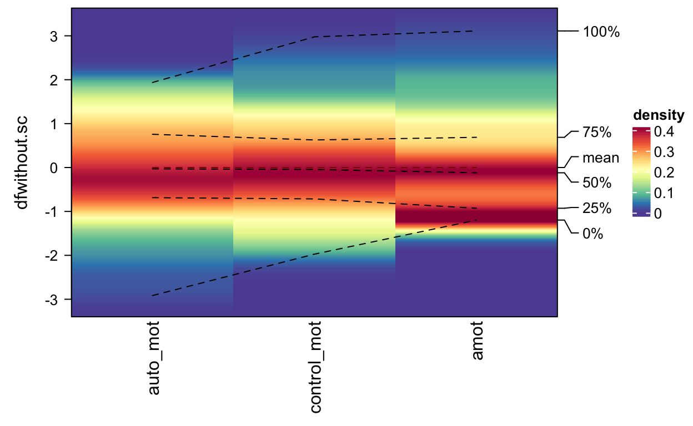

A theoretical and practical guide for K-Means clustering and Latent Profile Analysis in R
Welcome
In this tutorial, we are learning how to think about and to perform the most appropriate cluster analysis in the most appropriate way. This tutorial is based on the master thesis of Joachim Waterschoot (2020).
Before performing analyses seeking for ‘typical patterns’ in a continuous dataset, a researcher is demanded to think and to consider both the expected clusters and which variables are included. Like each hypothesis that is constructed in science, a researcher needs to theoretically state the types of classifications that are expected in the dataset.
Formulate a ‘cluster-range’ hypothesis
It is recommended to consider the range of clusters that will be analyzed, based on available literature or theoretically-based hypotheses.
Avoid ‘Cluster’-hacking
It is required to report as much information a research could gain, this to inform how decisions were made both before, during and after clustering. Informing the reader about the whole process is demanded, as the risk exists the researcher chooses an inaccurate of uninformative number of clusters, just to be in line with an apriori hypothesis.
Coming from the understanding of ‘p-hacking’, a researcher could have the tendency only to work with the number of components showing the most suitable partition of the dataset, while another number of components was expected. Nevertheless, it is believed that the subjective flexibility of interpretations might be a fundamental influence in reporting cluster results (Lo Siou, et al., 2010). For instance in visual techniques as the Elbow method for K-Means clustering and the Relative entropy curve for LPA, there are no clear cut-offs to determine the optimal number of clusters.
Apart from being a statistician, an employer, an employee, a student or a researcher, everyone who works with a dataset should know the data he or she is working on.
Which variables are included and what are the descriptive statistics of these variables (e.g. mean and standard deviation)? How are these variables associated (correlations)? Do they have a good internal consistency? Are variables comparable before starting the cluster analyses? How many missing data is in the dataset and how these should be handled?
library(sjPlot)
sjt.itemanalysis(df[,c(keys.list$automot)],
factor.groups.titles = "Autonomous motivation")
| Row | Missings | Mean | SD | Skew | Item Difficulty | Item Discrimination | α if deleted | |
|---|---|---|---|---|---|---|---|---|
| mot1_1 | 0.83 % | 4.49 | 0.69 | -1.63 | 0.90 | 0.37 | 0.74 | |
| mot1_2 | 5.24 % | 4.39 | 0.74 | -1.53 | 0.88 | 0.48 | 0.73 | |
| mot2_1 | 1.38 % | 4.31 | 0.79 | -1.2 | 0.86 | 0.46 | 0.73 | |
| mot2_2 | 5.52 % | 4.16 | 0.89 | -1.15 | 0.83 | 0.57 | 0.71 | |
| mot3_1 | 0.83 % | 4.18 | 0.82 | -0.93 | 0.84 | 0.39 | 0.74 | |
| mot3_2 | 5.52 % | 4.19 | 0.86 | -1.11 | 0.84 | 0.54 | 0.71 | |
| mot4_1 | 1.20 % | 4.39 | 0.83 | -1.56 | 0.88 | 0.36 | 0.75 | |
| mot4_2 | 5.52 % | 4.04 | 1.02 | -1.18 | 0.81 | 0.46 | 0.73 | |
| Mean inter-item-correlation=0.280 · Cronbach’s α=0.756 | ||||||||
library(Routliers)
# select variables from dataset
df <- na.omit(df[,c('auto_mot','control_mot','amot')])
# calculate univariate outliers (example: auto_mot)
outliers.aum <- outliers_mad(x=df$auto_mot,
b = 1.4826,
threshold = 3,
na.rm = TRUE)
# display univariate outliers (example: auto_mot)
plot_outliers_mad(res = outliers.aum,
x = df$auto_mot,
pos_display = FALSE)

# bivariate outliers (example: auto_mot and control_mot)
outliers.aumcom <- outliers_mahalanobis(
df[,c('auto_mot','control_mot')],
na.rm=TRUE)
# display bivariate outliers (example: auto_mot and control_mot)
plot_outliers_mahalanobis(outliers.aumcom,
x=df[,c('auto_mot','control_mot')],
pos_display = FALSE)

# Define outliers in dataset:
## 1. make new variable ’outliers’ with levels ’No’
df$outliers <- "No"
## 2. define all rows detected as univariate outliers as ’Yes’
## (example: auto_mot)
df[outliers.aum$outliers_pos,c('outliers')] <- "Yes"
## 3. define all rows detected as bivariate outliers as ’Yes’
## (example: auto_mot and control_mot)
df[outliers.aumcom$outliers_pos,c('outliers')] <- "Yes"
## Check percentage of deteceted outliers
round(prop.table(summary(as.factor(df$outliers))),2)
No Yes
0.99 0.01 describe(dfwithout)
vars n mean sd median trimmed mad min max range
auto_mot 1 1067 4.08 0.48 4.06 4.09 0.46 2.69 5.00 2.31
control_mot 2 1067 2.47 0.75 2.44 2.45 0.74 1.00 4.69 3.69
amot 3 1067 2.11 0.93 2.00 2.02 1.11 1.00 5.00 4.00
skew kurtosis se
auto_mot -0.16 -0.31 0.01
control_mot 0.27 -0.28 0.02
amot 0.69 -0.12 0.03
library("PerformanceAnalytics")
chart.Correlation(dfwithout, histogram=TRUE, pch=19)

library(ComplexHeatmap)
densityHeatmap(dfwithout, title=NULL)

# scale the dataframe
dfwithout.sc <- scale(dfwithout,scale=TRUE)
# as it is saved as a matrix, convert to data frame
dfwithout.sc <- as.data.frame(dfwithout.sc)
densityHeatmap(dfwithout.sc, title=NULL)

By standardization, the mean and the variances of the study variables are comparable by which they can be treated with equal importance in the cluster analysis.
Here, we formulate five basic questions you should be able to answer before starting cluster analysis. We hope these will help you understanding and deciding more considerably which cluster analysis you want to perform for which reasons.
K-Means clustering only incorporates the mean of the variables, while LPA incorporates both the mean and the variances. In the current tutorial, we only focus on the procedure of Gaussian Mixed Modeling, referring to the application of LPA (mixture modeling) to the Gaussian family. When a researcher would assume the underlying mixture components do have a Poisson, rather than a Gaussian distribution, other parameters should be included. Also, stronger assumptions are made about data properties, like normally distributed variables.
In line with the difference in parameters between K-Means clustering and LPA (e.g., no and some type of variance, resp.), LPA allows for geometric flexibility, while K-Means clustering is not flexible in the shape of clusters. To put this simply, K-Means clustering draws a ‘circle’ around the calculated centroid of the clusters where the radius is equal to the maximum Euclidean distance. Here, all data points are assigned to one of the closest cluster. Whenever the data has different shapes, the same procedure will be applied by which important information of the data might be lost. In contrast, LPA includes a specific within-covariance matrix model, by which the shape of the cluster can fit the data in the most optimal way. In a practical way, the EM-algorithm (used in LPA) is applied to digital face recognition in Machine Learning. This algorithm is able to identify a series of data points as ‘a mouth’ or, in line with circular clusters, two separated ‘eyes’. K-Means clustering is not able to do this.
For the reason of geometric flexibility in LPA, one might think that K-Means clustering is a special case of LPA, especially the cases where geometric flexibility is at a minimum level. In reality, this might be true as K-Means clustering refers to the covariance model with spherical distributions with equal volumes and equal shapes (i.e. ‘EII’ in the mclust package). Importantly, there is no 1:1 correspondence as both techniques are based on different calculations.
In addition to point 2, mixture modelling is useful for clusters/components with varying variances and varying sizes, while K-Means cluster analysis assumes identity covariance structures (spherical clusters) and equal cluster sizes. Given this, it enforces statistical independence to the clusters, also called statistical whitening. When the components are expected to correlate (because we allowed for geometrical flexibility, translated by covariance structures), LPA seems useful and an optimization of K-Means clustering.
The statistical whitening or the ‘decorrelation’ of components can be useful for several reasons:
Easier interpretation: The results of non-orthogonal models, like in LPA, are more complicated to interpret and should be done more cautiously. For instance, the level of uncertainty has to be taken into account, while the K-means clustering implements a ‘hard’ assignment (see next question).
Multicollinearity: Incorporating the covariances between clusters brings the alertness of researchers in upcoming analyses. Mostly, the latent variable ‘cluster membership’ is used as a predictor for a series of outcomes. Accounting for the covariances results in a certain level of multicollinearity. This is the case when two or more variables in a regression model are linearly related. This might affect the standard errors (overestimation), type II error (false negatives), overfitting of the models and issues in parameter estimation.
K-Means clustering can be called the ‘model-free clustering with hard assignment’. Based on the EM-algorithm, LPA results in a probability (i.e. mixture weight) for each case to what extent it belongs to each cluster. Herein, the latent variable ‘profile’ will be completed by the cluster with the highest probability within each case. In K-Means clustering, the goal of the algorithm is to update each data point in terms of its distance to each centroid, while LPA estimates parameter distributions resulting and accounting for overlap of clusters based on the parametric models.
It is states that K-Means clustering has a ‘bias’ to create clusters of equal sizes. Nevertheless, this is not useful when it is thought that the dataset contains clusters that are not comparable in size (Symons, 1981). In that case, it is recommended to use LPA and check for covariance constraints with varying sizes.
The difference in cluster sizes can be an issue anticipating further analyses. Specifically, there are multiple tests contributing on the idea of having a balanced design (i.e. all levels of the predictor are equally sizes). A balanced design can be beneficial, as statistical tests (e.g. ANOVA) will have large statistical power and the tests are less sensitive to violations of the homoscedasticity assumptions (i.e. having equal variances). This could result in no reliable and misleading results with, for example, increased Type I error (false positive) showing highly significant results, especially in small sample sizes.
In line, many statistical tests including parameter estimation rely on the Central Limit Theorem (CLT), stating that the sampling distribution of a parameter, like the mean, will approximate a normal distribution, given a sufficiently large sample size. Knowing the implication of CLT on statistical inference (in terms of power and levels of significance), results changes with sample size. This points to the risk of having small groups using LPA, while a balanced design with sufficiently large clusters resulting from K-Means clustering are favorable in this perspective.